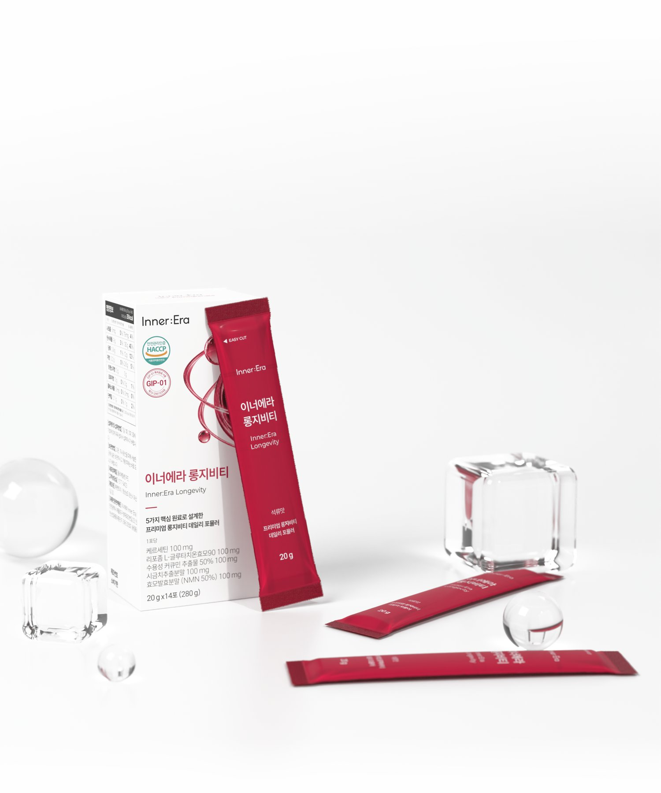
INNER BEAUTY STARTS FROM WITHIN
매일 한 포로 시작하는롱지비티 루틴
A New Era of Longevity
- 5가지 핵심 원료
- GIP-01 특허원료
- 석류맛 젤리스틱
따로 챙기던 다섯 가지 원료를 하나로,
5가지 핵심 원료를 담은 석류맛 젤리스틱 한 포
LONGEVITY ROUTINE
시간을 거스르는 아름다움보다,시간을 함께하는 아름다움
이너에라 롱지비티는 단순한 외적 관리를 넘어,
일상 속에서 지속 가능한 아름다움의 습관을 제안합니다.
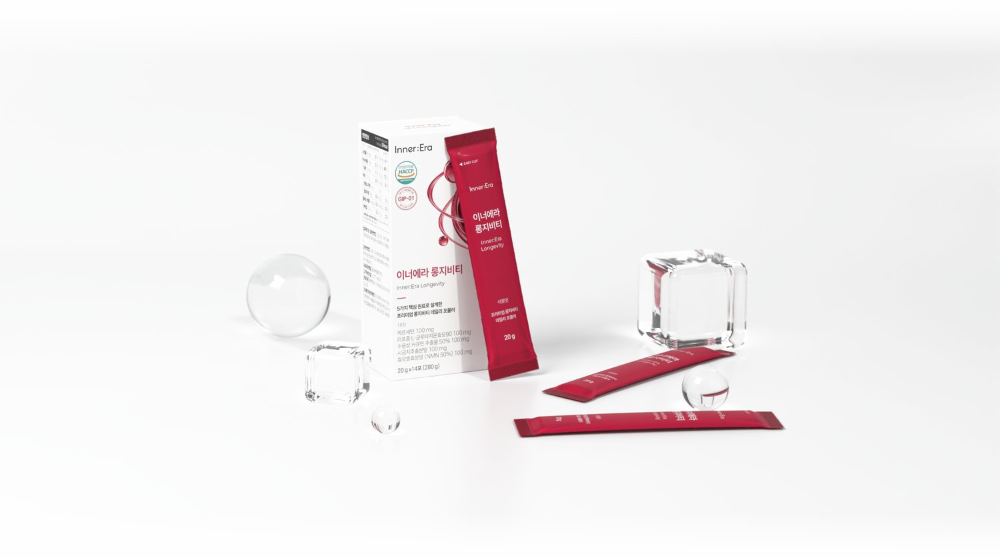
왜 전 세계는 지금,
롱지비티에 주목할까요?
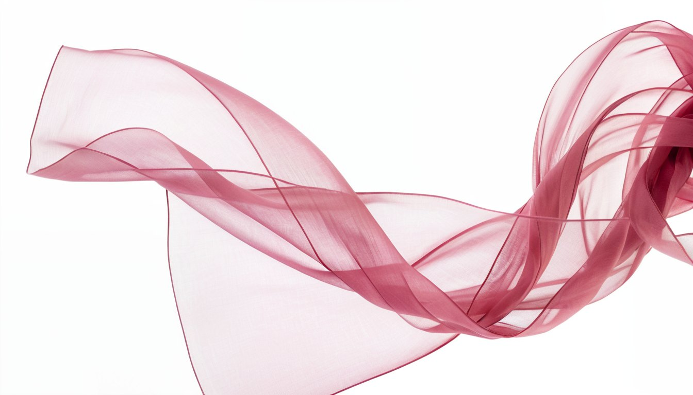
롱지비티(Longevity)란?
안티에이징을 넘어선 새로운 건강 관리의 패러다임.
단순히 노화를 늦추거나 젊음을 유지하는 것을 넘어, 나이가 들어도 신체적·정신적 건강과 활력을 유지하며 건강한 삶을 더 오래 이어가는 것을 의미합니다.
오래 사는 것보다 건강하게 오래 사는 것.
오늘의 작은 습관으로 더 건강한 내일을 만들어가는 것.
이너에라가 추구하는 롱지비티의 가치입니다.
아름다움의 기준이 ‘지금 어려 보이는 것’에서‘오래 나답게 빛나는 것’으로 옮겨가고 있어요
MY DAILY RITUAL
하루하루,쌓여가는 나의 시간
- 챙겨야 할 건 많지만, 하나하나 챙기긴 번거로워요
- 복잡한 루틴 대신, 핵심만 한 포에 담았어요
- 오늘부터 쌓아가는 습관, 10년 그 이상을 위해
콜라겐 젤리와는 다른, 다섯 가지 핵심 원료
이런 분께 추천해요
- 01무엇부터 챙겨야 할지
막막한 분 - 02육아·야근으로
나를 돌볼 틈이 없는 분 - 03이너뷰티 루틴까지
생각하는 분 - 04나만의 롱지비티를
시작하고 싶은 분
알파리포산부터 NMN까지
따로 챙기던 다섯 통을이제 한 포로!
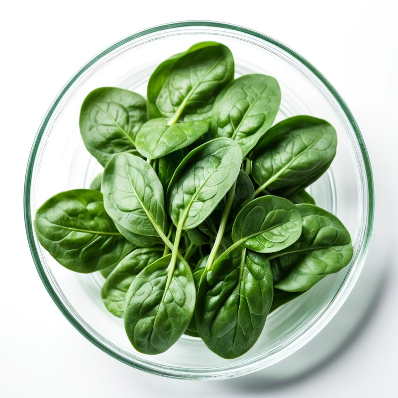
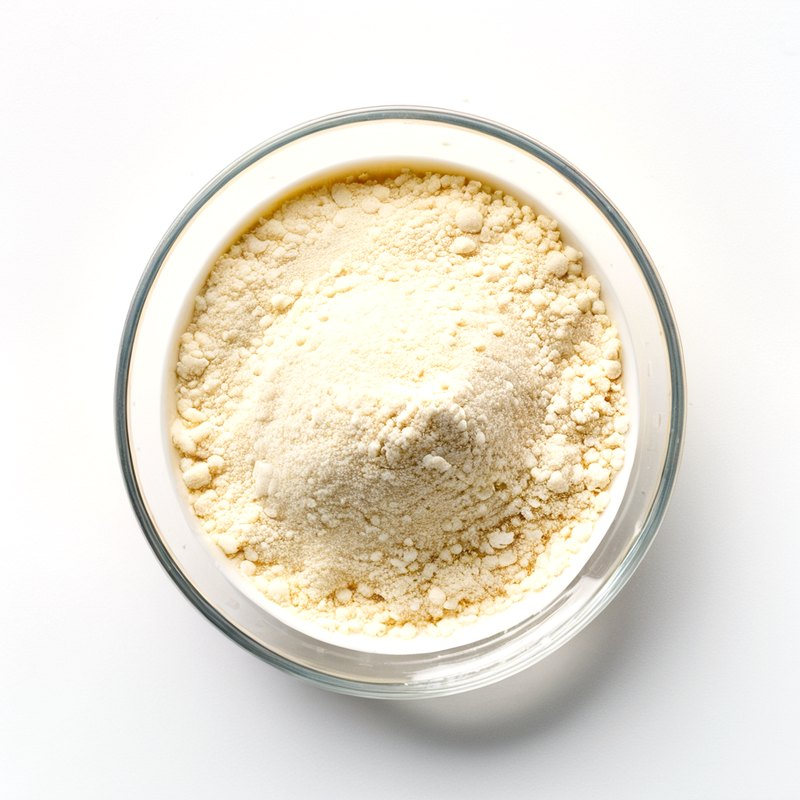
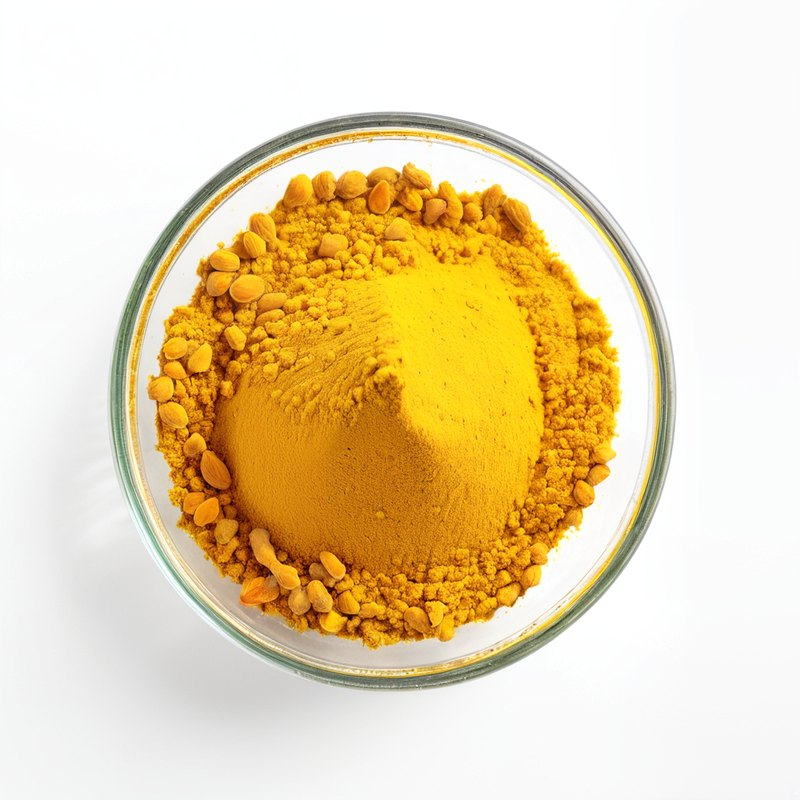
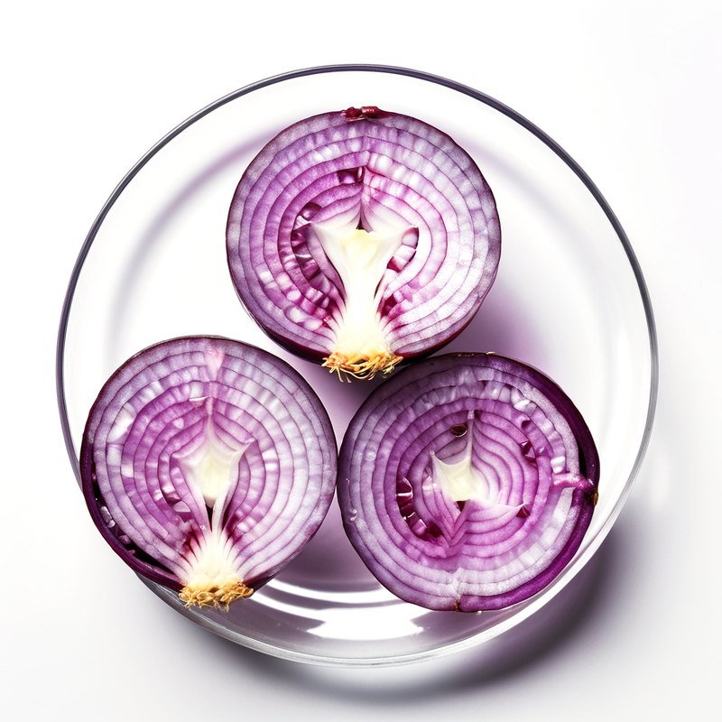
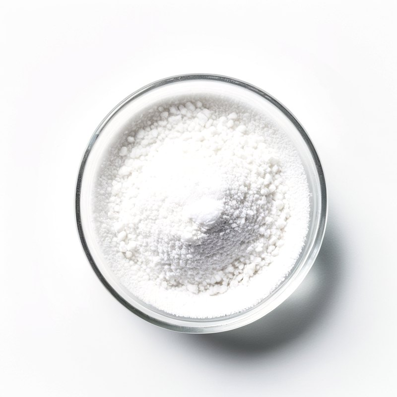
Five Essentials, One Formula다섯 가지 핵심 원료, 하나의 포뮬러
엄선한
5가지 핵심 원료
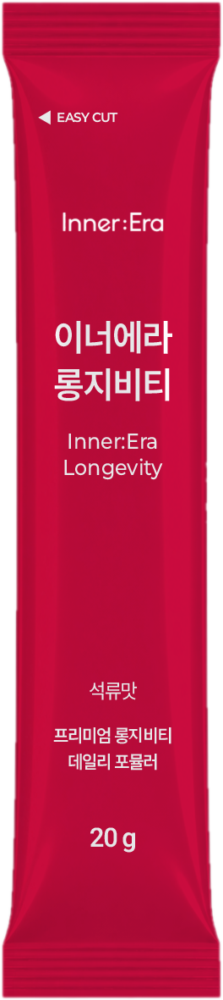
5가지 핵심 원료를 한 번에 담은 Inner:Era
이제 당신의 데일리 리추얼로!
CORE INGREDIENTS
특허 원료 GIP-01과5가지 핵심 원료
원료 하나하나의 출처와 규격까지 확인하고 골랐습니다.
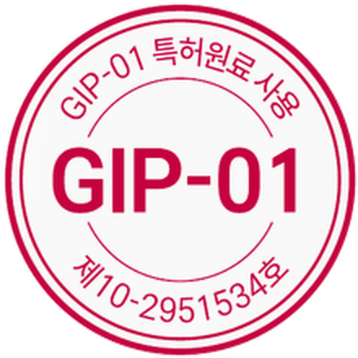
- 01Alpha-Lipoic Acid알파리포산미국산 시금치 추출분말 (알파리포산 2%)1포당 100 mg
- 02Glutathione글루타치온리포좀 L-글루타치온 효모 (효모 유래 · 리포좀 공법)1포당 100 mg
- 03Curcumin커큐민수용성 커큐민 추출물 50% (인도산 강황 유래)1포당 100 mg
- 04Quercetin케르세틴인도산 원료 (식물 유래 플라보노이드)1포당 100 mg
- 05NMNNMN효모 발효 분말 (NMN 50% 규격)1포당 100 mg
글루타치온+리포좀→담긴 형태
GLUTATHIONE리포좀 L-글루타치온인지질 두 겹의 작은 주머니(리포좀)에
글루타치온을 담은 형태의 원료입니다.
효모→발효→NMN
NMN효모 발효로 얻은 NMN합성이 아닌 효모 발효로 얻은 원료로,
NMN 50% 규격입니다.
*1포당 함량은 패키지 표기 기준입니다.
*상기 내용은 제품이 아닌 원료에 대한 정보입니다.
RESEARCH
연구 논문으로 살펴본다섯 가지 핵심 원료
알파리포산ALA
시금치·브로콜리 속, 황을 품은 지방산 유래 성분
7,399편글루타치온Glutathione
세 가지 아미노산이 이어진 트리펩타이드
180,343편커큐민Curcumin
강황 뿌리줄기의 노란색을 내는 폴리페놀
28,845편케르세틴Quercetin
양파 껍질·사과에 들어 있는 플라보노이드
33,390편NMN
비타민 B3 계열에서 만들어지는 뉴클레오타이드
1,548편
*논문 수 : PubMed 제목·초록 검색 기준, 2026년 10월
*막대 길이는 로그 눈금(1,000편 기준)입니다.
*원료가 자연에서 발견되는 대표 식품을 소개한 것으로, 제품 원료의 원산지를 뜻하지 않습니다.
*상기 내용은 제품이 아닌 원료에 대한 정보입니다.
PATENTED · 차별화된 프리미엄 원료
케르세틴을 핵심으로 설계한특허 복합 원료, GIP-01
GIP-01은 PBH가 연구·개발한 특허 등록 복합 조성물입니다.
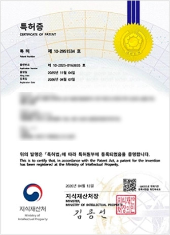
- 출원일
- 2025년 11월 4일
- 등록일
- 2026년 4월 7일
- 서류 원료명
- 회화나무 추출물(퀘르세틴)
원료 수입 단계부터, 서류로 확인했습니다
공인 시험기관 검사 다섯 항목 모두 ‘적합’
- 건조감량적합
- 함량적합
- 확인시험적합
- 납적합
- 비소적합
확인 서류 · 시험성적서 · 수입신고필증 · 수입식품 신고확인증
*상기 내용은 제품이 아닌 원료에 대한 정보입니다.
TASTE & TEXTURE
상큼하게, 간편하게물 없이 즐기는 석류맛 젤리스틱
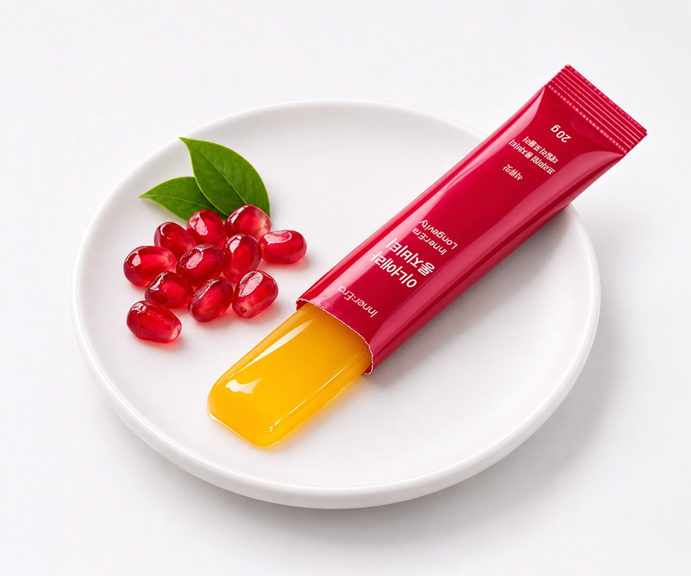
- POINT 1달콤 상큼한 석류맛
- POINT 2물 없이 한 포, 20 g 스틱
석류맛인데 왜 노란색일까요?
젤리의 노란빛은 강황 유래 커큐민에서 와요.
색은 강황을, 맛은 상큼한 석류를 닮았습니다.
FORMULATED BY PH.D.
식품공학 박사가 직접 설계한프리미엄 롱지비티 포뮬러
매일 먹는 식품이니까, 원료부터 품질까지 기준을 지켰습니다.
국제 식품안전 인증을 받은 제조시설에서 만듭니다.
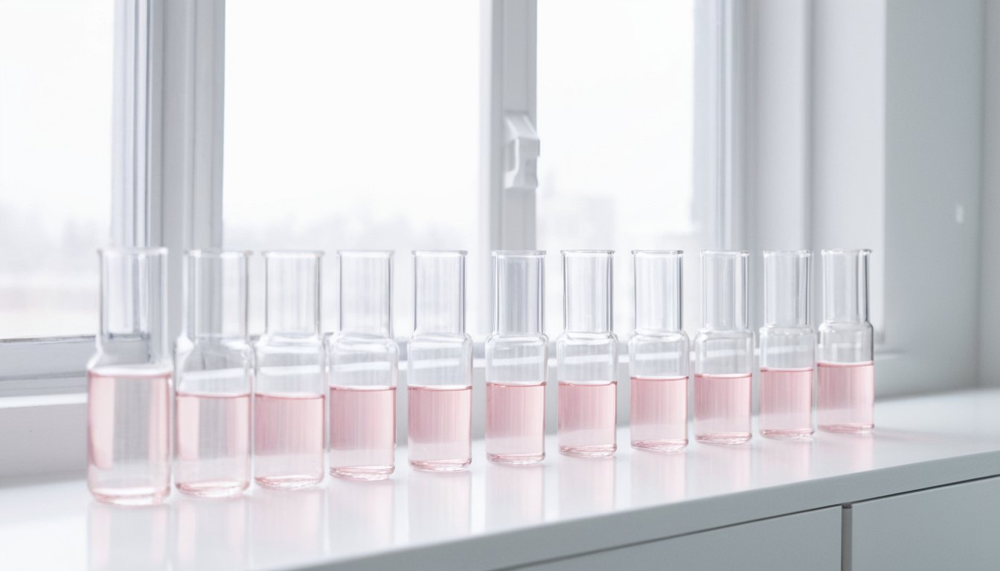
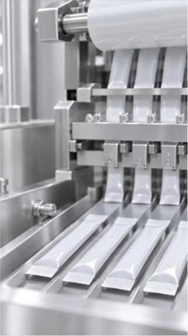

 HACCP식품안전관리
HACCP식품안전관리
인증기준 적용업소 FSSC 22000국제 식품안전
FSSC 22000국제 식품안전
시스템 인증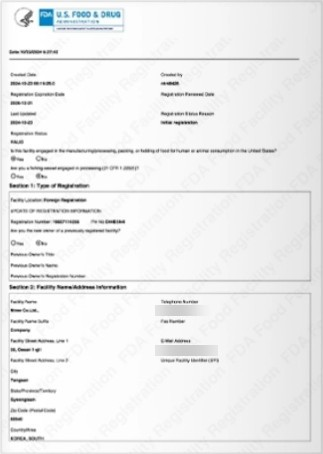
US FDA미국 FDA
식품시설 등록 ISO 22000식품안전경영
ISO 22000식품안전경영
시스템 인증 ISO 9001품질경영
ISO 9001품질경영
시스템 인증
- 원칙 하나인증받은 곳에서 만듭니다국제 식품안전 인증을 받은 제조시설
- 원칙 둘원료를 숨김없이 밝힙니다다섯 원료 이름을 패키지에 그대로
- 원칙 셋매일 먹을 수 있는 맛으로꾸준히 이어가기 좋은 석류맛 젤리
- 원칙 넷한 포씩 따로 담았습니다1포 20 g, EASY CUT 개별 포장
*제조시설(㈜엔트리)이 받은 인증과 등록입니다.
PRODUCT
매일 한 포로 챙기는이너에라 롱지비티
- 석류맛Pomegranate
매일 부담 없이 즐길 수 있는 석류맛 젤리스틱입니다. 스틱 상단의 EASY CUT으로 간편하게 개봉해 언제 어디서나 한 포씩 즐길 수 있습니다.
 20 g × 14포총 280 g
20 g × 14포총 280 g1포 20 g 젤리스틱 14포가 한 상자에 들어 있습니다. 스틱마다 EASY CUT 표시가 있습니다.

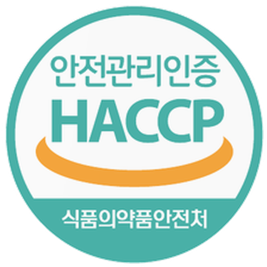
GIP-01 특허원료GIP-01 특허원료(특허 제10-2951534호)를 사용했습니다. 식품의약품안전처 HACCP 안전관리인증 제품입니다.
- 11일 1포하루 한 번, 한 포씩
- 2꼭꼭 씹어서젤리를 충분히 씹어서
- 3물 없이언제 어디서나 간편하게
이너에라 롱지비티는 건강기능식품이 아닌 일반식품입니다.
FAQ
자주 묻는질문
- 이너에라 롱지비티는 어떤 제품인가요?
- 특허 원료 GIP-01과 5가지 핵심 원료를 한 포에 담은 석류맛 이너뷰티 젤리스틱입니다. 일상 속에서 간편하게 즐기는 데일리 루틴을 제안합니다.
- 롱지비티(Longevity)란 무엇인가요?
- 단순히 오래 사는 것을 넘어, 건강하고 활력 있는 삶을 오래 유지하는 것에 주목하는 개념입니다.
- 하루에 얼마나, 언제 먹으면 되나요?
- 1일 1회, 1포를 충분히 씹어서 드세요. 물 없이 먹는 젤리 타입이라 아침이나 저녁, 나만의 시간을 정해 두면 잊지 않고 챙기기 좋습니다.
- 다른 제품과 함께 먹어도 되나요?
- 원료와 함량이 겹치지 않는지 확인해 주세요. 의약품을 복용 중이거나 특정 원료에 민감하다면 전문가와 상담 후 드시길 권장합니다.
간편하게 챙기는 데일리 리추얼
Inner:Era
5가지 핵심 원료로 설계한 데일리 포뮬러
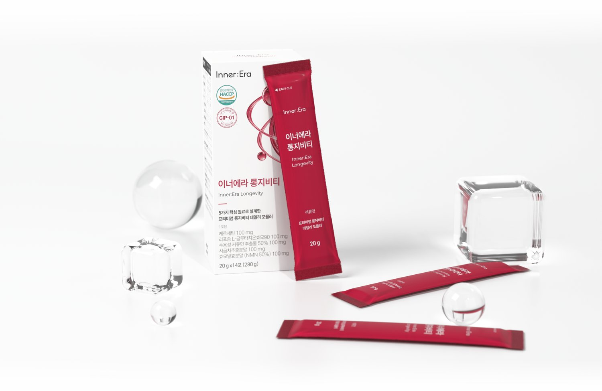
오늘의 한 포가,
내일의 나를 위한 습관이 됩니다.
이너에라 롱지비티로 나만의 데일리 루틴을 시작해 보세요.
OFFICIAL MALL BENEFIT
공식몰 혜택
공식몰에서 만나는 이너에라만의 혜택
제품 정보 고시
| 제품명 | 이너에라 롱지비티 |
|---|---|
| 내용량 | 20 g × 14포 (280 g) |
| 내포장재질 | 폴리에틸렌(PE) |
| 섭취방법 | 1일 1회, 1회 1포씩 기호에 맞게 꼭꼭 씹어서 섭취하시기 바랍니다. |
| 보관방법 | 고온, 직사광선을 피해 서늘한 곳에 실온 보관하시고 개봉 후에는 바로 드시기 바랍니다. |
| 원재료명 | 석류농축액(석류100%/스페인산), 정제수, 프락토올리고당, 기타과당, 혼합제제1[로커스트콩검, 잔탄검, 포도당, 한천, 타마린드검], 효소처리스테비아(감미료), 향료(석류향), 기타가공품, 시금치추출분말, 혼합제제2[효모추출물, 레시틴, 구연산], 기타농산가공품, 케르세틴, 효모식품(미국산), 혼합제제3[잔탄검, 한천, 카라기난, 로커스트콩검, 타마린드검, 덱스트린, 타라검], 구연산, DL-사과산, 이눌린/치커리추출물(치커리추출물100%), 푸룬농축분말, 레드비트농축분말, 32종식물혼합추출분말, 혼합유산균17종 이산화황, 대두, 우유 함유 |
| 제조원 | ㈜엔트리 / 경상남도 양산시 외산1길 30 |
| 유통전문판매원 | 이너에라 Inner:Era / 인천광역시 제물포구 방축로83번길 23, 인천산업용품유통단지, B동 305호 (송림동) |
| 소비자상담실 | 1866-3711 |
- ※ 주의사항 : ① 특이체질, 알레르기 체질, 임신·수유부 및 질병 치료 중인 분은 원료의 성분을 확인 후 섭취하여 주십시오. ② 포장이 변형, 팽창, 손상되었거나 내용물이 변질되었을 경우 음용하지 마십시오. ③ 제품의 개봉 또는 섭취 시 포장재에 의해 상처를 입을 수 있으니 주의하시기 바랍니다. ④ 한번에 섭취할 경우 목에 걸릴 수 있으니 잘 씹어서 섭취하십시오.
- ※ 본 제품은 공정거래위원회 고시 소비자 분쟁해결기준에 의거, 교환 또는 보상받을 수 있습니다.
- ※ 본 제품은 알류(가금류), 메밀, 땅콩, 밀, 고등어, 게, 새우, 돼지고기, 복숭아, 토마토, 잣 등을 사용한 제품과 같은 제조시설에서 제조하고 있습니다.
- ※ 부정·불량식품 신고는 국번없이 1399
- ※ 반품 및 교환장소 : 구입처 및 판매원